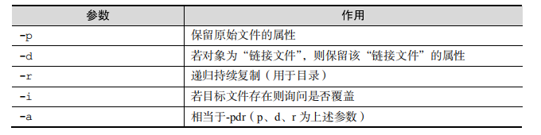
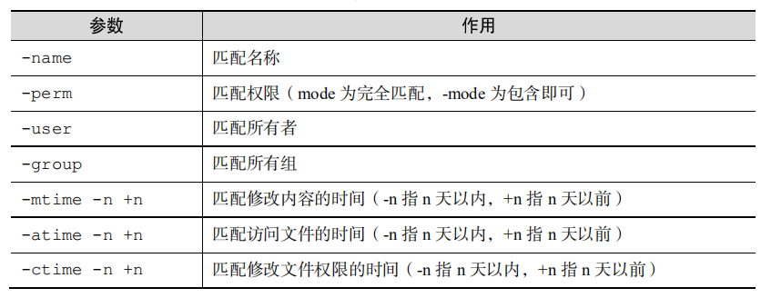
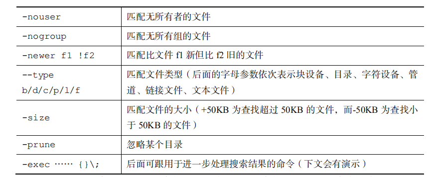
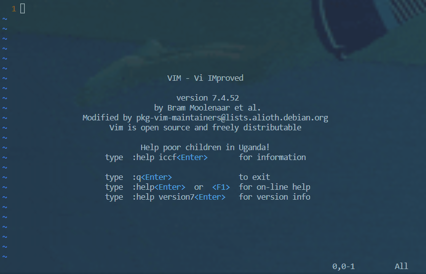
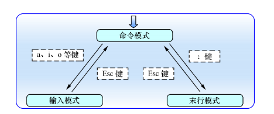
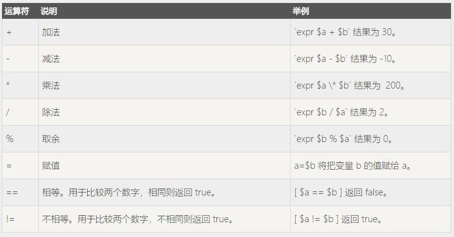
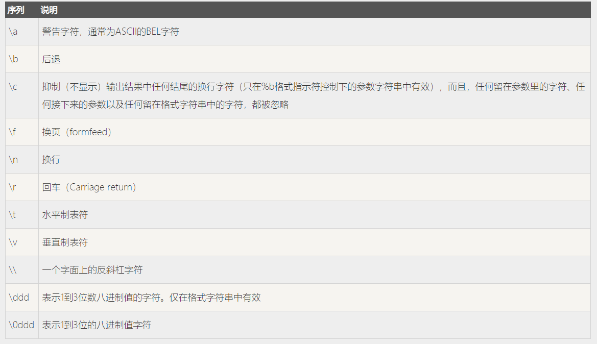
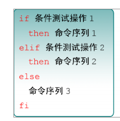
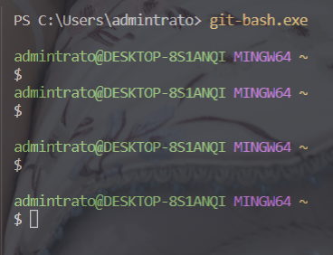
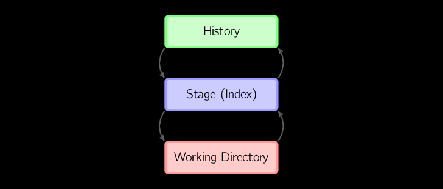

linux 笔记
常用命令
用户和用户组管理
newgroup 方便属于多组的用户切换所属的用户组
su username 切换当前使用的用户,在Ubuntu等环境下需要sudo执行
系统服务管理
在 redhat 系发行版上, 已经更换为 systemd.
在 Ubuntu 等系统上仍未改动.
| 旧版命令(Ubuntu) | 新版命令(RHEL7) | 备注 |
|---|---|---|
| service foo start | systemctl start foo.service | 启动服务 |
| service foo restart | systemctl restart foo.service | 重启服务 |
| service foo stop | systemctl stop foo.service | 停止服务 |
| service foo reload | systemctl reload foo.service | 重新加载配置文件（不终止服务） |
| service foo status | systemctl status foo.service | 查看服务状态 |
| chkconfig foo on | systemctl enable foo.service | 开机自动启动 |
| chkconfig foo off | systemctl disable foo.service | 开机不自动启动 |
| chkconfig foo | systemctl is-enabled foo.service | 查看特定服务是否为开机启动 |
ssh 服务安装与链接
微软自 windows10 1803 开始内置 openSSH,在虚拟机中安装 centOS 并配置网络后可以通过
[root@localhost ~]# systemctl start sshd.servie [root@localhost ~]#systemctl enble sshd.service
将 ssh 服务启动并加入到开机启动列表中.
然后通过
[root@localhost ~]# ifconfig
或者
[root@localhost ~]# ip addr
查看虚拟机 ip.
在 windows 下可通过
ssh root@192.168.0.100
如果在 VirtualBox 下部署的虚拟机 ip 地址无效,则应当检查网卡配置.
一般配置为桥接网络,可以正常获取有效 IP.
通过 SSH 链接虚拟机中 Linux 后,输入 root 用户密码后进入.
也可以通过编辑 ssh 配置文件,为虚拟机设置别名,方便使用.
PS C:\Users\admintrato> ssh local root@192.168.0.100's password: Last login: Tue Jul 9 12:20:27 2019 from 192.168.0.104
基础命令
- echo 命令
输出打印字符串
[root@localhost ~]# echo test test
- date 命令
可以通过+(%Y%m%d%H%M%S)参数进行格式化输出日期时间.
[root@localhost ~]# date "+%Y-%m-%d-%H:%M:%S" 2019-07-09-12:43:28
- reboot 命令
重启 - poweroff 命令
关机 - wget 命令
- -c 断点续传
- -b 后台下载,可通过 wget -log 查询下载情况
[root@localhost ~]# wget -cb https://www.guancha.cn/images/mian-logo.png Continuing in background, pid 7149. Output will be written to ‘wget-log’. [root@localhost ~]# ls anaconda-ks.cfg dircolors-solarized mian-logo.png wget-log
- ps 命令用于查看系统中的进程状态，格式为“ps [参数]”。
[root@localhost ~]# ps PID TTY TIME CMD 7093 pts/0 00:00:00 bash 7177 pts/0 00:00:00 ps

- top 命令
用于查看系统当前负载信息和进程活动
top - 13:22:19 up 5:17, 1 user, load average: 0.00, 0.01, 0.05 Tasks: 92 total, 1 running, 91 sleeping, 0 stopped, 0 zombie %Cpu(s): 0.0 us, 0.0 sy, 0.0 ni,100.0 id, 0.0 wa, 0.0 hi, 0.0 si, 0.0 st KiB Mem : 1882300 total, 1378352 free, 125964 used, 377984 buff/cache KiB Swap: 839676 total, 839676 free, 0 used. 1572144 avail Mem PID USER PR NI VIRT RES SHR S %CPU %MEM TIME+ COMMAND 3 root 20 0 0 0 0 S 0.3 0.0 0:00.14 ksoftirqd/0 1 root 20 0 128008 6664 4172 S 0.0 0.4 0:01.61 systemd 2 root 20 0 0 0 0 S 0.0 0.0 0:00.04 kthreadd 5 root 0 -20 0 0 0 S 0.0 0.0 0:00.00 kworker/0:0H 6 root 20 0 0 0 0 S 0.0 0.0 0:00.13 kworker/u2:0 7 root rt 0 0 0 0 S 0.0 0.0 0:00.00 migration/0 8 root 20 0 0 0 0 S 0.0 0.0 0:00.00 rcu_bh 9 root 20 0 0 0 0 S 0.0 0.0 0:00.50 rcu_sched 10 root 0 -20 0 0 0 S 0.0 0.0 0:00.00 lru-add-drain 11 root rt 0 0 0 0 S 0.0 0.0 0:00.09 watchdog/0
- pidof 命令
用于查看某个指定进程的 PID.
[root@localhost ~]# pidof systemd 1
- kill 命令
用于中止特定 PID 的进程. - killall 命令
用于终止某个指定名称的服务所对应的全部进程. - ifconfig 命令
ifconfig 命令用于获取网卡配置与网络状态等信息.
[root@localhost ~]# ifconfig enp0s3: flags=4163<UP,BROADCAST,RUNNING,MULTICAST> mtu 1500 inet 192.168.0.100 netmask 255.255.255.0 broadcast 192.168.0.255 inet6 fe80::6dcf:ec7:d245:4142 prefixlen 64 scopeid 0x20<link> ether 08:00:27:da:be:4a txqueuelen 1000 (Ethernet) RX packets 19662 bytes 22645898 (21.5 MiB) RX errors 0 dropped 0 overruns 0 frame 0 TX packets 11536 bytes 1269990 (1.2 MiB) TX errors 0 dropped 0 overruns 0 carrier 0 collisions 0 lo: flags=73<UP,LOOPBACK,RUNNING> mtu 65536 inet 127.0.0.1 netmask 255.0.0.0 inet6 ::1 prefixlen 128 scopeid 0x10<host> loop txqueuelen 1000 (Local Loopback) RX packets 0 bytes 0 (0.0 B) RX errors 0 dropped 0 overruns 0 frame 0 TX packets 0 bytes 0 (0.0 B) TX errors 0 dropped 0 overruns 0 carrier 0 collisions 0
- uname
[root@localhost ~]# uname -a Linux localhost.localdomain 3.10.0-957.el7.x86_64 #1 SMP Thu Nov 8 23:39:32 UTC 2018 x86_64 x86_64 x86_64 GNU/Linux
- -a 显示简略信息
- uptime
用于查看系统的负载信息
[root@localhost ~]# uptime
13:32:05 up 5:27, 1 user, load average: 0.00, 0.01, 0.05
- free
用于显示当前系统中内存的使用量信息 - who
用于查看当前登入主机的用户终端信息 - last
用于查看所有系统的登录记录 - history
用于显示历史执行过的命令
- -c 清除记录
- 使用 history 列出历史列表后,使用
!+ 序号可以快速重新输入该命令
-
sosreport 命令
用于收集系统配置及架构信息并输出诊断文档
文件操作
pwd 命令用于显示用户当前所处的工作目录
cd change dictionary to 的缩写,用去切换当前工作目录
ls 显示目录文件
- ls -a 显示隐藏文件
- ls -l 显示常见信息
cat 适宜查看小文件内容
more 适宜查看大文件内容,翻页查看
head -n 10 a.txt 查看文件前十行
tail -n 10 a.txt 查看文件后十行
tac 从最后一行开始显示，可以看出 tac 是 cat 的倒写
nl 显示的时候，顺道输出行号
less 与 more 类似，但是比 more 更好的是，他可以往前翻页！
| 管道符 将后一个命令的输出结果输出给前一个命令作为对象
tr 命令用于替换文本文件中的字符
[a-z][a-z]通配符
wc 统计文件行数字符数,字节数
[root@localhost ~]# wc anaconda-ks.cfg
47 120 1235 anaconda-ks.cfg
- -l 查看文件的行数
- -c 查看文件的字符数
- -w 查看文件的字节数
[root@localhost ~]# vim a.txt [root@localhost ~]# cat a.txt qwertyuiop asdfghjkl zxcvbnm [root@localhost ~]# cat a.txt | tr [a-z] [A-Z] QWERTYUIOP ASDFGHJKL ZXCVBNM [root@localhost ~]# wc a.txt 3 3 29 a.txt
stat 查看文件修改时间
[root@localhost ~]# stat anaconda-ks.cfg File: ‘anaconda-ks.cfg’ Size: 1235 Blocks: 8 IO Block: 4096 regular file Device: fd00h/64768d Inode: 8409154 Links: 1 Access: (0600/-rw-------) Uid: ( 0/ root) Gid: ( 0/ root) Context: system_u:object_r:admin_home_t:s0 Access: 2019-07-09 08:12:38.067542433 -0400 Modify: 2019-07-08 05:14:12.438000000 -0400 Change: 2019-07-08 05:14:12.438000000 -0400 Birth: -
cut 命令
用于按“列”提取文本字符
- -f 参数来设置需要看的列数
- -d 参数来设置间隔符号
文件目录管理命令
-
touch 命令
用于创建空白文件或设置文件的时间

-
mkdir 命令
用于创建空白的目录
- -p 参数来递归创建出具有嵌套叠层关系的文件目录
-
cp 命令
用于复制文件或目录，格式为“cp [选项] 源文件 目标文件”。
 -
rm 命令
用于删除文件或目录，格式为“rm [选项] 文件”。
- -f 参数来强制删除
- -r 删除一个目录
- dd 命令
用于按照指定大小和个数的数据块来复制文件或转换文件，格式为“dd [参数]”。

例如我们可以用 dd 命令从/dev/zero 设备文件中取出 2 个大小为 1MB 的数据块，然后
保存成名为 1_file 的实际上为空的文件。
[root@localhost ~]# dd if=/dev/zero of=1_file count=2 bs=1M 2+0 records in 2+0 records out 2097152 bytes (2.1 MB) copied, 0.00113581 s, 1.8 GB/s
- file 命令
用于查看文件的类型，格式为“file 文件名”。
归档命令与文件搜索
- tar 命令用于对文件进行打包压缩或解压，格式为“tar [选项][文件]”。
- -c 参数用于创建压缩文件
- -x 参数用于解压文件
- -z 参数指定使用 Gzip 格式来压缩或解压文件
- -j 参数指定使用 bzip2 格式来压缩或解压文件
- 用-v 参数向用户不断显示压
缩或解压的过程 - -C 参数用于指定要解压到哪个指定的目录
- -f 参数特别重要，它必须放到
参数的最后一位，代表要压缩或解压的软件包名称
一般使用“tar -czvf 压缩包名称.tar.gz 要打包的目录”命令把指定的文件进行打包压缩；
相应的解压命令为“tar -xzvf 压缩包名称.tar.gz”。
[root@localhost ~]# tar -czvf a.tar.gz a.txt a.txt
- grep 命令用于在文本中执行关键词搜索，并显示匹配的结果
- -n 参数用来显示搜索到信息的行号；
- -v 参数用于反选信息（即没有包含
关键词的所有信息行）
[root@localhost ~]# grep a a.txt asdfghjkl
- find 命令
用于按照指定条件来查找文件


- -exec 参数有重要的作用。这个参数用于把 find 命令搜索到的结果交
由紧随其后的命令作进一步处理，它十分类似于管道符技术
[root@localhost ~]# find /etc -name "host*" -print /etc/host.conf /etc/hosts /etc/hosts.allow /etc/hosts.deny /etc/selinux/targeted/active/modules/100/hostname /etc/hostname
管道符、重定向和环境变量
重定向
- 标准输入重定向（STDIN，文件描述符为 0）：默认从键盘输入，也可从其他文件或命
令中输入。 - 标准输出重定向（STDOUT，文件描述符为 1）：默认输出到屏幕。
- 错误输出重定向（STDERR，文件描述符为 2）：默认输出到屏幕。
| 符号 | 作用 |
|---|---|
| 命令 < 文件 | 将文件作为命令的标准输入 |
| 命令 << 分界符 | 从标准输入中读入，直到遇见分界符才停止 |
| 命令 < 文件 1 > 文件 2 | 将文件 1 作为命令的标准输入并将标准输出到文件 2 |
| 符号 | 作用 |
|---|---|
| 命令 > 文件 | 将标准输出重定向到一个文件中（清空原有文件的数据） |
| 命令 2> 文件 | 将错误输出重定向到一个文件中（清空原有文件的数据） |
| 命令 >> 文件 | 将标准输出重定向到一个文件中（追加到原有内容的后面） |
| 命令 2>> 文件 | 将错误输出重定向到一个文件中（追加到原有内容的后面） |
| 命令 >> 文件 2>&1 或 命令 &>> 文件 |
将标准输出与错误输出共同写入到文件中（追加到原有内容的后面） |
| 命令 | 说明 |
|---|---|
| command > file | 将输出重定向到 file。 |
| command < file | 将输入重定向到 file。 |
| command >> file | 将输出以追加的方式重定向到 file。 |
| n > file | 将文件描述符为 n 的文件重定向到 file。 |
| n >> file | 将文件描述符为 n 的文件以追加的方式重定向到 file。 |
| n >& m | 将输出文件 m 和 n 合并。 |
| n <& m | 将输入文件 m 和 n 合并。 |
| << tag | 将开始标记 tag 和结束标记 tag 之间的内容作为输入。 |
输入重定向的作用常常是把文件直接导入到命令中。
>是覆盖模式
>>是追加模式
/dev/null 是一个被称作 Linux 黑洞的文件，把输出信息重定向到这个文件等
同于删除数据
如果希望 存储错误信息的标准错误文件 stderr 重定向到 file，可以这样写：
$ command 2 > file
如果希望 stderr 追加到 file 文件末尾，可以这样写：
$ command 2 >> file
2 表示标准错误文件(stderr)。
如果希望将 stdout 和 stderr 合并后重定向到 file，可以这样写：
$ command > file 2>&1
或者
$ command >> file 2>&1
如果希望对 stdin 和 stdout 都重定向，可以这样写：
$ command < file1 >file2
command 命令将 stdin 重定向到 file1，将 stdout 重定向到 file2。
Here Document 是 Shell 中的一种特殊的重定向方式，用来将输入重定向到一个交互式 Shell 脚本或程序。
它的基本的形式如下：
command << delimiter
document
delimiter
管道符
管道命令符的作
用是“把前一个命令原本要输出到屏幕的标准正常数据当作是后一个命
令的标准输入”。
如通过重定向技术能够一次性地把多行信息打包输入或输出
管道符就好像是用于实现数据穿越的任意门，可以帮我们提高工作效率，完成之前不敢想象的复杂工作。
通配符
用法类似于 Python 语言中的正则表达式.
- 通配符就是通用的匹配信息的符号，
- 比如星号（*）代
表匹配零个或多个字符 - 问号（?）代表匹配单个字符，
- 中括号内加上数字[0-9]代表匹配 0 ～
9 之间的单个数字的字符 - 中括号内加上字母[abc]则是代表匹配 a、b、c 三个字符中的任意
一个字符。
[root@localhost ~]# touch abababa.txt [root@localhost ~]# ls 1_file abababa.txt a.tar.gz b readme.txt wget-log a anaconda-ks.cfg a.txt b.txt solarized [root@localhost ~]# ls [ab]* a ababaababa abababa.txt anaconda-ks.cfg a.tar.gz a.txt b b.txt
转义字符
4 个最常用的转义字符如下所示:
- 反斜杠（\）：使反斜杠后面的一个字符变为单纯的字符。
- 单引号（''）：转义其中所有的变量为单纯的字符串。
- 双引号（""）：保留其中的变量属性，不进行转义处理。
- 反引号（
）：把其中的命令执行后返回结果。 而如果只需要某个命令的输出值时，可以像命令``这样，将命令用反引号括起来，达到预
期的效果。
环境变量(PATH 变量)
命令在 Linux 中的执行分为 4 个步骤。
- 判断用户是否以绝对路径或相对路径的方式输入命令（如/bin/ls），如果是的话
则直接执行。 - Linux 系统检查用户输入的命令是否为“别名命令”，即用一个自定义的命令
名称来替换原本的命令名称。- 可以用 alias 命令来创建一个属于自己的命令别名，格式为
“alias 别名=命令”。 - 若要取消一个命令别名，则是用 unalias 命令，格式为“unalias 别名”。
- 可以用 alias 命令来创建一个属于自己的命令别名，格式为
[root@localhost ~]# alias rm alias rm='rm -i'
- Bash 解释器判断用户输入的是内部命令还是外部命令。
- 系统在多个路径中查找用户输入的命令文件，而定义这些路径的变量叫作 PATH，作用是告诉 Bash 解释器待执行的命令可能存放
的位置,就如同 Python 中解释器寻找包名指向的模块所在的目录一样.使用 env 命令可以查看到 Linux 系统中所有的环境变量
使用
echo $path命令可以打印相应环境变量的值
使用
type命令可以查看一个命令是内部命令还是外部命令
如下可以设置一个临时变量，而后export将其提升为环境变量。
[root@localhost ~]# myDir=/home [root@localhost ~]# $myDir -bash: /home: Is a directory [root@localhost ~]# export myDir
VIM 与 Shell Script
Vim 编辑器
“在 Linux 系统中一切都是文件，而配置一个服务就是在修改其配置文件的参数,而这些工作都是通过文本编辑器来完成的。
Vim 编辑器全称 Vi improved,与 centOS 预装的 VI 编辑器兼容.


| 命令 | 作用 |
|---|---|
| dd | 删除（剪切）光标所在整行 |
| 5dd | 删除（剪切）从光标处开始的 5 行 |
| yy | 复制光标所在整行 |
| 5yy | 复制从光标处开始的 5 行 |
| n | 显示搜索命令定位到的下一个字符串 |
| N | 显示搜索命令定位到的上一个字符串 |
| u | 撤销上一步的操作 |
| p | 将之前删除（dd）或复制（yy）过的数据粘贴到光标后面 |
| 命令 | 作用 |
|---|---|
| :w | 保存 |
| :q | 退出 |
| :q! | 强制退出（放弃对文档的修改内容） |
| :wq! | 强制保存退出 |
| :set nu | 显示行号 |
| :set nonu | 不显示行号 |
| :命令 | 执行该命令 |
| :整数 | 跳转到该行 |
| :unamused:/one/two | 将当前光标所在行的第一个 one 替换成 two |
| :unamused:/one/two/g | 将当前光标所在行的所有 one 替换成 two |
| :%s/one/two/g | 将全文中的所有 one 替换成 two |
| ?字符串 | 在文本中从下至上搜索该字符串 |
| /字符串 | 在文本中从上至下搜索该字符串 |
shell 脚本
Shell 脚本命令的工作方式有两种：交互式和批处理。
- 交互式（Interactive）：用户每输入一条命令就立即执行。
- 批处理（Batch）：由用户事先编写好一个完整的 Shell 脚本，Shell 会一次性执行脚本中诸多的命令。
变量与数组
变量
变量名不加美元符号,$符号为 shell 保留的关键字，此外，还需
- 命名只能使用英文字母，数字和下划线，首个字符不能以数字开头。
- 中间不能有空格，可以使用下划线（_）。
- 不能使用标点符号。
- 不能使用 bash 里的关键字（可用 help 命令查看保留关键字）。
- 变量赋值
变量可以像 Python 一样直接赋值而不声明，也可以通过语句赋值。 - 变量使用
在语句中以${name}的形式进行使用，花括号可以省略，shell 解释器会以空格作为边界，但是某些时候会引起歧义。 - 只读变量
使用readonly name可以将变量定义为只读变量。 - 删除变量
unset name命令可以删除变量,但不能删除只读变量。
字符串
shell 中存在三种变量。
- 局部变量 局部变量在脚本或命令中定义，仅在当前 shell 实例中有效，其他 shell 启动的程序不能访问局部变量。
- 环境变量 所有的程序，包括 shell 启动的程序，都能访问环境变量，有些程序需要环境变量来保证其正常运行。必要的时候 shell 脚本也可以定义环境变量。
- shell 变量 shell 变量是由 shell 程序设置的特殊变量。shell 变量中有一部分是环境变量，有一部分是局部变量，这些变量保证了 shell 的正常运行
此外 shell 中还有两种常用的数据类型：数字和字符串。
-
单引号字符串
'string'单引号字符串在打印输出时会保留原有内容而忽略转义字符、变量等。- 单引号里的任何字符都会原样输出，单引号字符串中的变量是无效的；
- 单引号字串中不能出现单独一个的单引号（对单引号使用转义符后也不行），但可成对出现，作为字符串拼接使用。
-
双引号字符串
双引号中可以引用变量，也可以出现转义字符。
常用的字符串操作有：
- 字符串拼接
可以使用单引号、双引号进行字符串拼接操作。
root@DESKTOP-8S1ANQI:~# str1="123" root@DESKTOP-8S1ANQI:~# str2="456" root@DESKTOP-8S1ANQI:~# str="$str1$str2" root@DESKTOP-8S1ANQI:~# echo $str 123456 root@DESKTOP-8S1ANQI:~#
- 获取字符串长度
root@DESKTOP-8S1ANQI:~# vim 1.sh root@DESKTOP-8S1ANQI:~# cat ./1.sh string="abcd" echo ${#string} root@DESKTOP-8S1ANQI:~# bash ./1.sh 4
root@DESKTOP-8S1ANQI:~#
- 查找子字符串
root@DESKTOP-8S1ANQI:~# string="123456789" root@DESKTOP-8S1ANQI:~# echo `expr index "$string" 7` 7
- 提取子字符串（切片）
root@DESKTOP-8S1ANQI:~# string="123456789" root@DESKTOP-8S1ANQI:~# echo ${string:1:3} 234
数组
Shell 数组用括号来表示，元素用"空格"符号分割开，数组元素的下标由 0 开始,也可以使用下标来定义数组.
root@DESKTOP-8S1ANQI:~# cat ./1.sh myArray=(1 2 3 4) for i in ${myArray[@]} ; do echo "$i" done root@DESKTOP-8S1ANQI:~# bash ./1.sh 1 2 3 4
使用@ 或 * 可以获取数组中的所有元素,获取数组长度的方法与获取字符串长度的方法相同.
数组的值也可以写入变量。
根据数组元素索引获取该数组元素值时，数组下标可为变量
参数的接受
脚本内获取参数的格式为$n,代表获取参数的的编号。
此外还有几种较为特殊的字符用于处理参数。

$*与 $@ 区别：
- 相同点：都是引用所有参数。
- 不同点：只有在双引号中体现出来。假设在脚本运行时写了三个参数 1、2、3，，则 " * " 等价于 "1 2 3"（传递了一个参数），而 "@" 等价于 "1" "2" "3"（传递了三个参数）。
$*相当于传递了一个拼接的字符串
$@相当于传递了一个数组
为 shell 脚本传递的参数中如果包含空格，应该使用单引号或者双引号将该参数括起来，以便于脚本将这个参数作为整体来接收。
条件判断语句
Shell 脚本中的条件测试语法可以判断表达式是否成立，若条件成立则返回数字0，否则便返回其他随机数值。
- 文件测试语句；
- 逻辑测试语句；
- 整数值比较语句；
- 字符串比较语句。
- 文件测试语句

在 Ubuntu 环境下执行下列命令
root@DESKTOP-8S1ANQI:/home/aka# [ -d ./nmb ] root@DESKTOP-8S1ANQI:/home/aka# echo $? 0
- 逻辑判断语句
- 在 Shell
终端中逻辑“与”的运算符号是&&，它表示当前面的命令执行成功后才会执行它后面的命令 - 在 Linux 系统中"或"的运算符号为||，表示当前面的命令执行失败后才会执行它后面的命令
aka@DESKTOP-8S1ANQI:~$ [ ! $USER = aka ] || echo $USER aka
- “非”在 Linux 系统中的运算符号是一个叹号（！），它表示把条件测试中的判断结果取相反值
- 整数值比较语句
整数比较运算符仅是对数字的操作，不能将数字与字符串、文件等内容一起操作，要使用规范的整数比较运算符来进行操作.
| 运算符 | 作用 | 助记 |
|---|---|---|
| -eq | 是否等于 | equal |
| -ne | 是否不等于 | not equal |
| -gt | 是否大于 | greater |
| -lt | 是否小于 | lesser |
| -le | 是否等于或小于 | lesser or equal |
| -ge | 是否大于或等于 | greater or equal |
aka@DESKTOP-8S1ANQI:~$ [ 10 -ge 8 ] aka@DESKTOP-8S1ANQI:~$ echo $? 0
- 字符串比较语句
| 运算符 | 作用 |
|---|---|
| = | 比较字符串内容是否相同 |
| != | 比较字符串内容是否不同 |
| -z | 判断字符串内容是否为空 |
| -n | 检测字符串长度是否为 0，不为 0 返回 true。 |
| $ | 检测字符串是否为空，不为空返回 true。 |
[ ]的逻辑判断语句常可以用 test 语句代替
基本运算
shell 支持运算符种类有：
- 算数运算符
- 关系运算符
- 布尔运算符
- 字符串运算符
- 文件测试运算符
通过 expr 表达式计算工具，我们可以完成表达式的求值操作。
root@DESKTOP-8S1ANQI:~# cat ./2.sh #!/bin/bash val=`expr 2 + 2` echo "两数之和为 $val" root@DESKTOP-8S1ANQI:~# bash ./2.sh 两数之和为 4

布尔运算符
| 运算符 | 说明 | 举例 |
|---|---|---|
| ! | 非运算，表达式为 true 则返回 false，否则返回 true。 | [ ! false ] 返回 true。 |
| -o | 或运算，有一个表达式为 true 则返回 true。 | [ b -gt 100 ] 返回 true。 |
| -a | 与运算，两个表达式都为 true 才返回 true。 | [ b -gt 100 ] 返回 false。 |
文件测试运算符
文件测试运算符用于检测 Unix 文件的各种属性。
| 操作符 | 说明 | 举例 |
|---|---|---|
| -b file | 检测文件是否是块设备文件，如果是，则返回 true。 | [ -b $file ] 返回 false。 |
| -c file | 检测文件是否是字符设备文件，如果是，则返回 true。 | [ -c $file ] 返回 false。 |
| -d file | 检测文件是否是目录，如果是，则返回 true。 | [ -d $file ] 返回 false。 |
| -f file | 检测文件是否是普通文件（既不是目录，也不是设备文件），如果是，则返回 true。 | [ -f $file ] 返回 true。 |
| -g file | 检测文件是否设置了 SGID 位，如果是，则返回 true。 | [ -g $file ] 返回 false。 |
| -k file | 检测文件是否设置了粘着位(Sticky Bit)，如果是，则返回 true。 | [ -k $file ] 返回 false。 |
| -p file | 检测文件是否是有名管道，如果是，则返回 true。 | [ -p $file ] 返回 false。 |
| -u file | 检测文件是否设置了 SUID 位，如果是，则返回 true。 | [ -u $file ] 返回 false。 |
| -r file | 检测文件是否可读，如果是，则返回 true。 | [ -r $file ] 返回 true。 |
| -w file | 检测文件是否可写，如果是，则返回 true。 | [ -w $file ] 返回 true。 |
| -x file | 检测文件是否可执行，如果是，则返回 true。 | [ -x $file ] 返回 true。 |
| -s file | 检测文件是否为空（文件大小是否大于 0），不为空返回 true。 | [ -s $file ] 返回 true。 |
| -e file | 检测文件（包括目录）是否存在，如果是，则返回 true。 | [ -e $file ] 返回 true。 |
| -S | 判断某文件是否 socket。 | |
| -L | 检测文件是否存在并且是一个符号链接。 | |
同时我们也可以用$[表达式]的形式进行运算。
root@DESKTOP-8S1ANQI:~# a=5 root@DESKTOP-8S1ANQI:~# b=6 root@DESKTOP-8S1ANQI:~# c=$[ a * b ] root@DESKTOP-8S1ANQI:~# echo $c 30
echo 与 read 、printf 命令
echo 常用的参数有：
- -e 开启转义
- >将输出重定向到目标文件
- 显示命令的执行结果即
echo `date`
- 字符串末尾加
\c输出时 echo 会不自动换行
read 用于从标准输入读取单行数据。
- -a 后跟一个变量，该变量会被认为是个数组，然后给其赋值，默认是以空格为分割符。
- -d 后面跟一个标志符，其实只有其后的第一个字符有用，作为结束的标志。
- -p 后面跟提示信息，即在输入前打印提示信息。
- -e 在输入的时候可以使用命令补全功能。
- -n 后跟一个数字，定义输入文本的长度，很实用。
- -r 屏蔽\，如果没有该选项，则\作为一个转义字符，有的话 \就是个正常的字符了。
- -s 安静模式，在输入字符时不再屏幕上显示，例如 login 时输入密码。
- -t 后面跟秒数，定义输入字符的等待时间。
- -u 后面跟 fd，从文件描述符中读入，该文件描述符可以是 exec 新开启的。
printf 命令模仿 C 程序库（library）里的 printf() 程序,但是参数仍然不需要括号。
默认 printf 不会像 echo 自动添加换行符，我们可以手动添加 \n。
printf 可以进行字符串的格式化。
%s %c %d %f 都是 printf 的格式替代符。
-
d: Decimal 十进制整数 -- 对应位置参数必须是十进制整数，否则报错！
-
s: String 字符串 -- 对应位置参数必须是字符串或者字符型，否则报错！
-
c: Char 字符 -- 对应位置参数必须是字符串或者字符型，否则报错！
-
f: Float 浮点 -- 对应位置参数必须是数字型，否则报错！
-
%b: 含有转义字符的字符串--相对应的参数将被视作一个字符串，其中的转义字符也将被转义后输出。
printf 还支持转义字符，基本与 C 语言一致。

test 命令
Shell 中的 test 命令用于检查某个条件是否成立.
其语法与[]相似。
let 命令
let命令用于计算，比expr 表达式，$[表达式]更为简便，表达式语法与 C 语言相似，可与((表达式))互换。
root@DESKTOP-8S1ANQI:~# echo $c 30 root@DESKTOP-8S1ANQI:~# let "c++" root@DESKTOP-8S1ANQI:~# echo $c 31 root@DESKTOP-8S1ANQI:~# ((c++)) root@DESKTOP-8S1ANQI:~# echo $c 32
let 的帮助信息中说明支持得操作符有：
| operator | funtion |
|---|---|
| id++, id-- | variable post-increment, post-decrement |
| ++id, --id | variable pre-increment, pre-decrement |
| -, + | unary minus, plus |
| !, ~ | logical and bitwise negation *_ |
| _, /, % | multiplication, division, remainder |
| +, - | addition, subtraction |
| <<, >> | left and right bitwise shifts |
| <=, >=, <, > | comparison |
| ==, != | equality, inequality |
| & | bitwise AND |
| bitwise XOR | |
| | | bitwise OR |
| && | logical AND |
| || | logical OR |
| expr ? expr : expr | conditional operator |
| =, *=, /=, %=,+=, -=, <<=, >>=,&=, ^=, |= | assignment |
流程控制语句
if 分支语句
单分支 if 语句
if [ 逻辑判断语句 ] then 命令序列... else 命令序列... fi #if语句结束
多分支 if 语句

for 迭代语句

类似 C 语言的写法：
for((assignment;condition:next));do command_1; command_2; commond_..; done;
while 循环语句
while 不断得执行一串命令，直到条件为假。
while condition do command done
until 语句
与 C 语言中的while(!逻辑表达式)类似，循环会一直执行到逻辑表达式为假，语法形式为：
until condition do command done
case 语句
shell 中的 case 功能强于 C 语言的switch...case语句，可以用 case 语句匹配一个值与一个模式，如果匹配成功，执行相匹配的命令。case 语句格式如下：
case 值 in 模式1) command1 command2 ... commandN ;; 模式2） command1 command2 ... commandN ;; esac
其中通配符*用来捕捉与前述模式皆不匹配的模式，即缺省或者默认选项。
shell 中跳出循环有 break 和 continue 两种。
- break
break 跳出所有嵌套的循环体。 - continue
continue 仅从本层本次循环中提前结束，进入本层循环的下次循环。
函数
shell 中用户可以定义函数，然后再脚本中调用。
[ function ] funname [()] { action; [return int;] }
其中 funtion 关键字可以省略，直接使用函数名称定义。
调用函数时类似调用命令或者其他脚本，无需添加()即可调用。
参数传递也与脚本、命令的调用相似，直接在函数名称后以空格分隔，函数获取参数与脚本获取参数的形式相同，以$n的形式按照序号获取。
root@DESKTOP-8S1ANQI:~# cat test.sh #!/bin/bash fun(){ for i in $@;do echo -e "${i} \n\c" done return $1 } fun 1 2 3 4 5 6 echo $? root@DESKTOP-8S1ANQI:~# bash test.sh 1 2 3 4 5 6 1
另外，还有几个特殊字符用来处理参数：
| 参数处理 | 说明 |
|---|---|
| $# | 传递到脚本的参数个数 |
| $* | 以一个单字符串显示所有向脚本传递的参数 |
| $$ | 脚本运行的当前进程 ID 号 |
| $! | 后台运行的最后一个进程的 ID 号 |
| $@ | 与$*相同，但是使用时加引号，并在引号中返回每个参数。 |
| $- | 显示 Shell 使用的当前选项，与 set 命令功能相同。 |
| $? | 显示最后命令的退出状态。0 表示没有错误，其他任何值表明有错误。 |
文件包含
和其他语言一样，Shell 也可以包含外部脚本。这样可以很方便的封装一些公用的代码作为一个独立的文件。
Shell 文件包含的语法格式如下：
. filename # 注意点号(.)和文件名中间有一空格 或 source filename
在执行脚本时，不需要被包含脚本的可执行权限。
Git 的使用
git 是 Linux 之父 Linus 在本世纪初开发的一款分布式版本控制系统。
安装
Linux 系统一般自带，windows 下需要下载安装。在 windows 下 git 自带 MINGW64 环境，可以用来学习部分 LINUX 命令。

apt-get install git
配置
git 需要配置用户名称和电子邮件地址。
root@DESKTOP-8S1ANQI:~# git config --global user.name "xiaoming" root@DESKTOP-8S1ANQI:~# git config --global user.email "xiaoming@123.com" root@DESKTOP-8S1ANQI:~# git config --list user.name=xiaoming user.email=xiaoming@123.com
git 的工作流程

git 的工作区，暂存区，版本库


(摘抄自：https://www.runoob.com/w3cnote/git-graphical.html)
如下四条命令在工作目录、暂存目录(也叫做索引)和仓库之间复制文件。
git add files把当前文件放入暂存区域。git commit给暂存区域生成快照并提交。git reset -- files用来撤销最后一次git add files，你也可以用git reset撤销所有暂存区域文件。git checkout -- files把文件从暂存区域复制到工作目录，用来丢弃本地修改。
创建仓库
git init 可以在当前目录创建一个仓库。
或者使用git init 目录地址在指定目录创建仓库。
初始化后，会在 newrepo 目录下会出现一个名为 .git 的目录，所有 Git 需要的数据和资源都存放在这个目录中。
root@DESKTOP-8S1ANQI:/home/aka/test# git init Initialized empty Git repository in /home/aka/test/.git/ root@DESKTOP-8S1ANQI:/home/aka/test# touch 1.c 2.c root@DESKTOP-8S1ANQI:/home/aka/test# git add *.c
也可以从远程仓库克隆到指定目录。
git clone <repo> <directory>
如果要自己定义要新建的项目目录名称，可以在上面的命令末尾指定新的名字.
常用操作
git add 命令可将该文件添加到缓存区，并开始追踪文件的改动。
git status 命令用于查看项目的当前状态。有新改动而未被加入到缓存区的文件前会有AM标识。
- -s 参数可以查看简短报告。
root@DESKTOP-8S1ANQI:/home/aka/test# vim 1.c root@DESKTOP-8S1ANQI:/home/aka/test# git status On branch master No commits yet Changes to be committed: (use "git rm --cached <file>..." to unstage) new file: 1.c new file: 2.c Changes not staged for commit: (use "git add <file>..." to update what will be committed) (use "git checkout -- <file>..." to discard changes in working directory) modified: 1.c
git diff显示已写入缓存与已修改但尚未写入缓存的改动的区别.
- 尚未缓存的改动：git diff
- 查看已缓存的改动： git diff --cached
- 查看已缓存的与未缓存的所有改动：git diff HEAD
- 显示摘要而非整个 diff：git diff --stat
root@DESKTOP-8S1ANQI:/home/aka/test# git diff diff --git a/1.c b/1.c index e69de29..3b5ad8c 100644 --- a/1.c +++ b/1.c @@ -0,0 +1,5 @@ +#include<stdio.h> +int main() +{ +return 0; +}
git add 命令将想要快照的内容写入缓存区， 而执行 git commit 将缓存区内容添加到仓库中。
- -m 提供提交时的附加信息。
root@DESKTOP-8S1ANQI:/home/aka/test# git commit -m "dcidjcd" [master (root-commit) ccdbafb] dcidjcd 2 files changed, 0 insertions(+), 0 deletions(-) create mode 100644 1.c create mode 100644 2.c
git reset HEAD 命令用于取消已缓存的内容。
执行
git reset HEAD以取消之前git add添加，但不希望包含在下一提交快照中的缓存。
从 Git 中移除某个文件，就必须要从已跟踪文件清单中移除，然后提交。这事就必需使用 git rm命令。
- 如果删除之前修改过并且已经放到暂存区域的话，则必须要用强制删除选项
-f -r递归删除，即如果后面跟的是一个目录做为参数，则会递归删除整个目录中的所有子目录和文件
git mv 命令用于移动或重命名一个文件、目录、软连接。
git checkout与 git reset 不同，reset 是替换整个目录树，多余的文件将被删除。而 checkout 只是替换指定的文件，对多余的文件保留不做任何处理。
git 分支管理
1.列出分支
git branch 会列出当前仓库目录在本地的所有分支。
2.新建分支
git branch (branchname)可以新建一个分支。
3.切换分支
git checkout (branchname)可以切换到指定分支。
也可以使用git checkout -b (branchname)命令来创建新分支并立即切换到该分支下。
4.删除分支
git branch -d (branchname)可以删除分支。
5.分支合并
git checkout (branchname)切换到合并目录分支,然后使用git emerge (被合并分支名)合并分支，打开文件查看是否存在合并冲突，解决后，使用git add命令更新文件到暂存区。
git 提交历史
git log命令查看提交历史。
- --graph 选项，查看历史中什么时候出现了分支、合并
- --reverse 参数来逆向显示所有日志
- --author 查找指定用户的提交日志
- --since 和 --before 或者--until 和 --after 查看指定时间段的提交历史.
当程序到经历了一次重大更新后,可以使用git tag命令对此提交快照添加标签,git 将会永久保留这次提交快照.
- -a 选项意为"创建一个带注解的标签"
当你执行 git tag -a 命令时，Git 会打开你的编辑器，让你写一句标签注解，就像你给提交写注解一样。
Git 远程仓库
添加远程仓库可以使用git remote add [shortname] [url]的命令,将在 GitHub 上创建的仓库添加为远程仓库.
git remote 查看当前的远程仓库
git fetch从远程仓库下载新分支与数据
git merge从远端仓库提取数据并尝试合并到当前分支
git push [远程仓库名] [branch]将本地改动推送至远程仓库.
git remote rm [远程仓库名]可以移除远程仓库.`